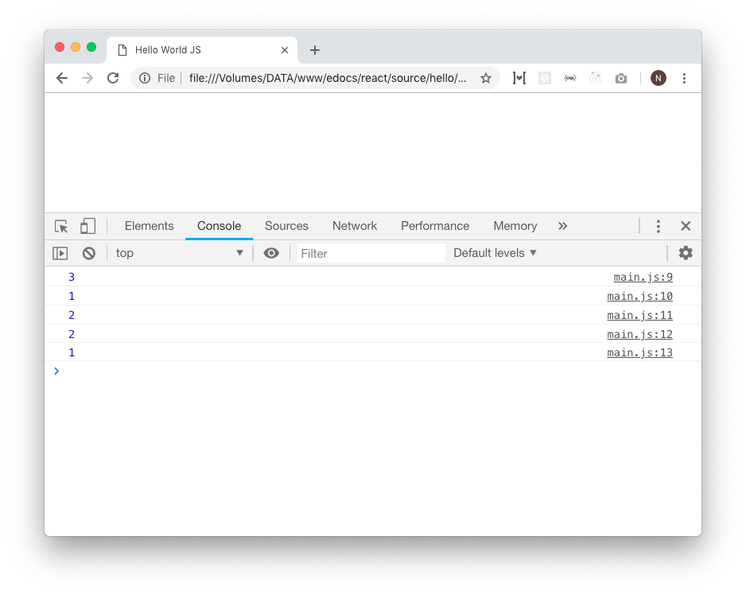

Operator
Operator biasanya digunakan untuk proses aritmatika, perbandingan maupun penentuan logika pada sintaks kondisional.
Operator Aritmatika
Operator ini digunakan untuk proses hitung-menghitung. Operator ini yang paling mudah dipahami karena sudah banyak ditemui waktu pelajaran matematika di bangku sekolah.
const penjumlahan = 1 + 2
const pengurangan = 2 - 1
const pengalian = 2 * 1
const pembagian = 4 / 2
// Biasa disebut modulus:
const sisaPembagian = 5 % 2
console.log(penjumlahan) // log: 3
console.log(pengurangan) // log: 1
console.log(pengalian) // log: 2
console.log(pembagian) // log: 2
console.log(sisaPembagian) // log: 1

Operator Aritmatika Tambahan
let angka = 1
angka++
console.log(angka) // log: 2
angka++
console.log(angka) // log: 3
let angka = 1
angka += 2
console.log(angka) // log: 3
angka += 3
console.log(angka) // log: 6
let angka = 6
angka -= 1
console.log(angka) // log: 5
angka -= 5
console.log(angka) // log: 0
Operator Perbandingan
Operator yang digunakan untuk mengecek suatu perbandingan. Biasanya digunakan untuk menghasilkan nilai balikan berupa true dan false yang nantinya akan digunakan pada sintaks kondisional.
| Operator | Nama | Keterangan |
|---|---|---|
| == | Equal | Apakah nilai kiri sama dengan nilai kanan (tipe data tidak strict) |
| === | Strict Equal | Apakah nilai kiri sama dengan nilai kanan (tipe data harus sejenis untuk dianggap sama / true) |
| != | Not Equal | Apakah nilai kiri tidak sama dengan nilai kanan (tipe data tidak strict) |
| !== | Strict Not Equal | Apakah nilai kiri tidak sama dengan nilai kanan (tipe data harus sejenis untuk dianggap tidak sama / true) |
| < | Less Than | Apakah nilai kiri kurang dari nilai kanan |
| > | Greater Than | Apakah nilai kiri lebih dari nilai kanan |
| <= | Less Than Or Equal | Apakah nilai kiri kurang dari atau sama dengan nilai kanan |
| >= | Greater Than Or Equal | Apakah nilai kiri lebih dari atau sama dengan nilai kanan |
Penggunaan operator strict sangat disarankan untuk meminimalisir bug yang tak diinginkan.
let kiri = 1
let kanan = "1"
console.log(kiri == kanan) // true (tidak strict, dianggap sama walau tipe data berbeda)
console.log(kiri === kanan) // false (karena strict)
kiri = 2
kanan = 2
console.log(kiri == kanan) // true
console.log(kiri === kanan) // true
kiri = 1
kanan = "1"
console.log(kiri != kanan) // false (tidak strict, dianggap sama walau tipe data berbeda)
console.log(kiri !== kanan) // true
let kiri = 2
let kanan = 5
console.log(kiri > kanan) // false
console.log(kiri < kanan) // true
kiri = 2
kanan = 2
console.log(kiri >= kanan) // true
console.log(kiri <= kanan) // true
Operator Logika
Mirip dengan operator perbandingan, hanya saja fungsinya untuk menggabungkan 2 atau lebih kondisi menjadi 1.
| Operator | Nama | Keterangan | ||
|---|---|---|---|---|
| && | AND | kondisi kiri dan kanan harus true | ||
| \ | \ | OR | kondisi kiri atau kanan harus true | |
| ! | Negasi / Kebalikan | Negasi pada nilai (Misal: true maka akan menjadi false) |
// User roles
let isAdmin = true
let isManager = false
// Harus Admin DAN Harus Manager (tidak boleh hanya salah satu)
console.log(isAdmin && isManager) // false
// Boleh Admin ATAU Manager (boleh salah satu)
console.log(isAdmin || isManager) // true
const userRole = "editor"
const isEditor = userRole === "editor"
// BUKAN editor boleh masuk
if (!isEditor) {
console.log("Boleh masuk")
} else {
console.log("Tidak Boleh masuk")
}
// log: Tidak boleh masuk (karena dia editor)
Ternary Operator
Ternary operator adalah operator untuk mendefinisikan suatu nilai secara kondisional. Ini sangat penting dan sangat sering digunakan. Misal pada conditional rendering di react / vue / angular / dkk. Jadi wajib paham!
Format Penulisan
kondisi ? nilai jika true : nilai jika false
const babTerbaca = 5
const totalBab = 5
const pesan = babTerbaca === totalBab ? "Buku Selesai Dibaca" : "Baca Terus Oy!"
console.log(pesan) // log: Buku Selesai Dibaca
Bagaimana cara membaca ternary operator tersebut? Jadi ternary operator diawali oleh kondisi
// Ini adalah kondisi pada ternary Operator
babTerbaca === totalBab ?
Jika nilainya benar / true, maka nilai yang dibalikkan atau return adalah nilai yang berada di sebelah kiri. Sedangkan jika salah, maka nilai yang di return adalah nilai yang sebelah kanan
// KIRI // KANAN
"Buku Selesai Dibaca" : "Baca Terus Oy!"